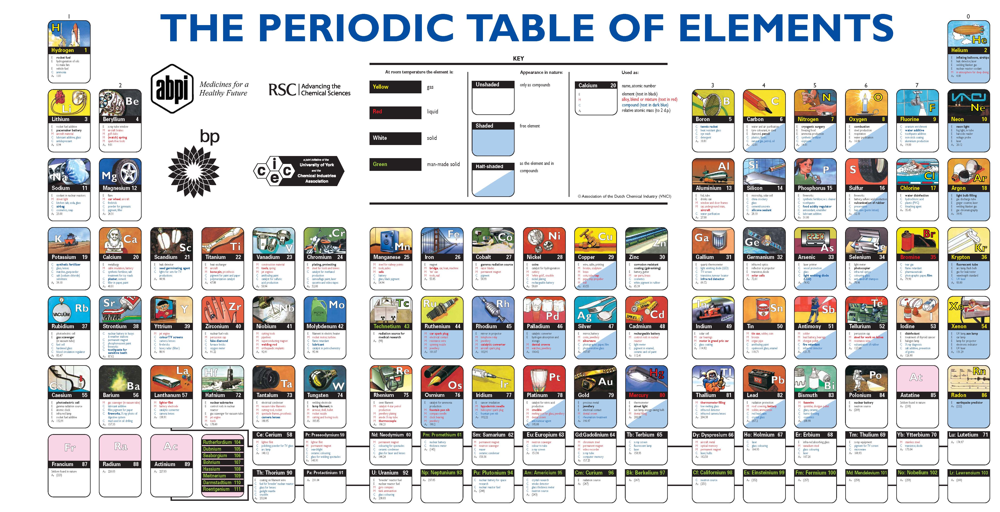
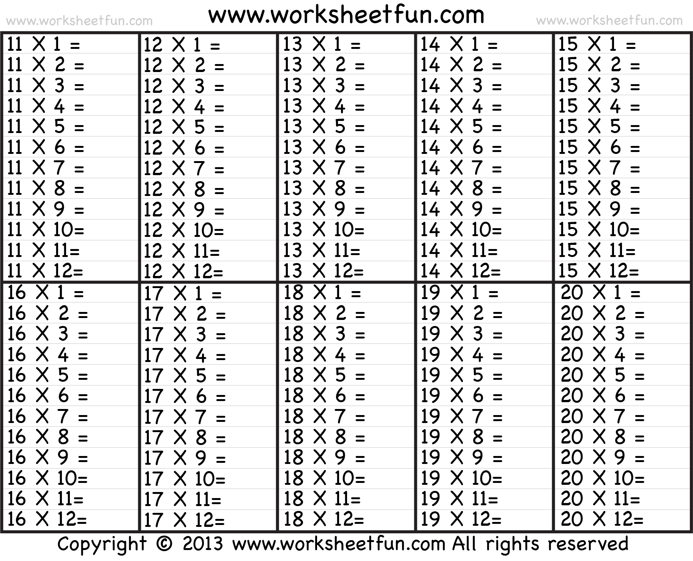
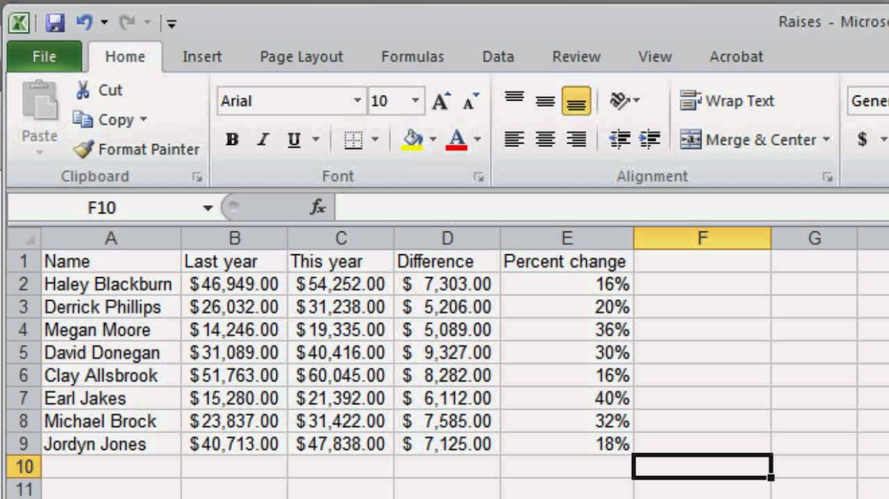
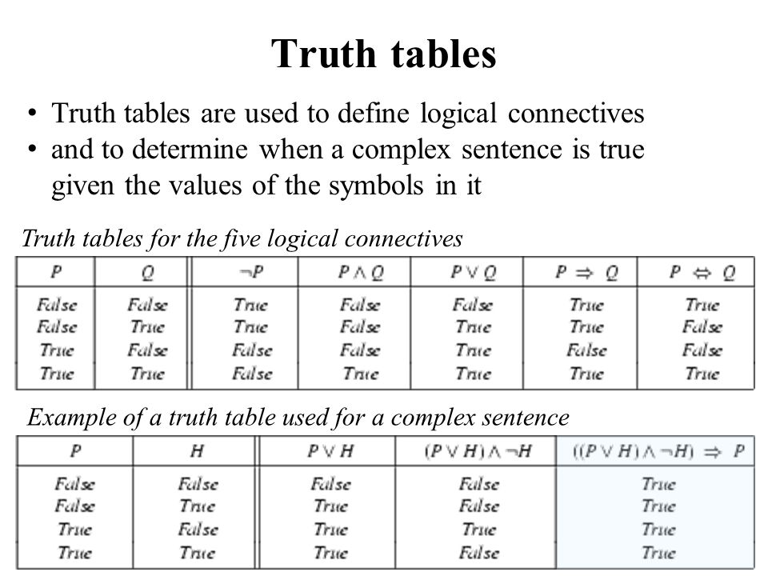

| Name | Surname | Favourite Sauce | Hometown |
|---|---|---|---|
| Naasik | Kamish | Tomato Sauce | Hanover Park |
| Ismet | Samsodien | Mustard | Ruyterwacht |
| Fatima | Hendricks | Sweet Chilli | Valhalla Park |
| Liam | Hendricks | Danya and Chilli | Grassy Park |
| Rasool | Booley | Hot Sauce | Cape Town |
| Taylor | Davids | Mayonnaise | Bridgetown |
| Raasikh | Booley | Tomato Sauce | Athlone |
| Khanyiso | Haman | BBQ | Delft |
| Nathier | Manuel | Tomato | Lost Town |
| Justin | Creighton | Chilli Sauce | Cape Town |
| Keanan | Erasmus | Sea Food Sauce | Cape Town |
| Tabile | Khume | BBQ | Khayelitsha |
| Ebraheem | Seale | Peri Naise | Bonteheuwel |
| Nashville | James | Jimmy Sauce | Bellville South |
| Marlon | Ford | Sweet Chilli | Grassy Park |
| Michelle | Fortuin | Sriracha | Brackenfell |
| Tohier | Dreyer | Sea Food Sauce | Cape Town |
| Justice | Ganiza | 1000 Island | Brooklyn |
| Marco | Paulse | Mushroom Sauce | Ottery |
| Elizabeth | Pollard | Mayonnaise | Claremont |
| Imraan | Meyer | Peri Naise | Grassy Park |
| Nur | Brock | Tikka Suace | Kensington |
Before all the naturally-occurring elements were discovered, the periodic table was used to predict the chemical and physical properties of elements in the gaps on the table. ... The table tells an elements' atomic number and usually its atomic weight. The usual charge on an element is indicated by an element's group.
Mathematical tables are lists of numbers showing the results of calculation with varying arguments. Before calculators were cheap and plentiful, people would use such tables to simplify and drastically speed up computation. Tables of logarithms and trigonometric functions were common in math and science textbooks. Specialized tables were published for applications such as astronomy, celestial navigation and statistics.
A spreadsheet is an interactive computer application for organization, analysis and storage of data in tabular form.[1][2][3] Spreadsheets are developed as computerized simulations of paper accounting worksheets.[4] The program operates on data entered in cells of a table. Each cell may contain either numeric or text data, or the results of formulas that automatically calculate and display a value based on the contents of other cells. A spreadsheet may also refer to one such electronic document
A truth table is a mathematical table used in logic—specifically in connection with Boolean algebra, boolean functions, and propositional calculus—which sets out the functional values of logical expressions on each of their functional arguments, that is, for each combination of values taken by their logical variables (Enderton, 2001). In particular, truth tables can be used to show whether a propositional expression is true for all legitimate input values, that is, logically valid.
